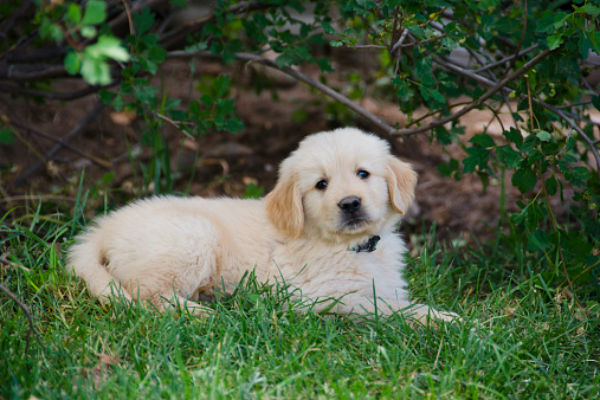

My Favorite Animal

My favorite animal is dog. Your dog is your best friend but there's a lot
you might not know about him! Whether your dog is young or old,
these fun facts about dogs will give you 101 new reasons to
love your furry friend:
facts about puppies
- Puppies love games such as hide and seek! Hide,
then call your pup's name so she can try to find you.
- Dogs can learn more than 1000 words.
- Big happy "helicopter" tail wagging is one sign of a really nice dog
- Upright, stiff, rapid tail movement is not wagging or "friendly"
but indicates a dog who's rather excited and focused.
- Puppies grow to half their body weight in the first four to five months!
- Puppies then take a year or more to gain the other half of their body weight.
- Puppies can sleep 18 to 20 hours a day during that rapid body growth phase.
- Dogs sometimes appear to smile — much like humans — with
open mouth grinning. This may indicate a relaxed, submissive state.
- Tired puppies get cranky just like little kids. If you have a fussy puppy, try nap time.
- The fastest breed, the Greyhound, can run up to 44 miles per hour.
- Perky-eared dogs hear sounds better than floppy-eared dogs.
- There are about 400 million dogs in the world.
- The Labrador Retriever is the most popular breed, according to the American Kennel Club.
- There are hundreds of breeds of dogs.
- The average dog lives 10 to 14 years.
- In general, smaller breeds live longer than larger breeds.
- The world's oldest breed, the Saluki, originated in Egypt around 329 B.C.
- According to a study shared by Cornell University,
dogs were domesticated between 9,000 and 34,000 years ago.
- Thomas Jefferson helped enact a dog tax in Virginia,
because he was annoyed that dogs were killing his sheep.
- Stroking dogs and gazing into their eyes releases the "feel good"
hormone oxytocin for both people and dogs.
- Dogs are omnivores -- they eat meat, grains and vegetables.
- The heaviest breed, the Mastiff, weighs about 200 pounds.
- More than half of all U.S. presidents have owned dogs.
- President Calvin Coolidge owned at least a dozen dogs.
- Just like human fingerprints, no two dogs' nose prints are alike.
- At about 6 inches, the Chihuahua is the shortest breed.
- Irish Wolfhounds, the tallest breed, are 30 to 35 inches tall.
- A Russian dog named Laika was the first animal in space, traveling around Earth in 1957.
- Dogs who bark the most: Miniature Schnauzers, Cairn Terriers, Yorkshire Terriers, Fox Terriers and West
Highland White Terriers.
- Puppies have 28 teeth and adult dogs have 42.
- The best age to bring a puppy home is 8 to 12 weeks.
- Dogs can see best at dawn and dusk.
- Dogs aren't colorblind but their eyes don't have receptors for red. They see in shades of black and
white and also in shades of blue and yellow.
- New puppies have heat sensors in their noses to help find their moms while their eyes and ears are
closed.